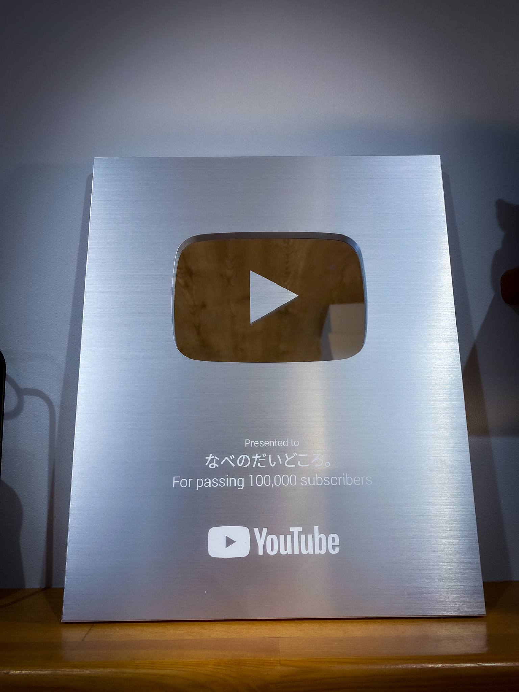

01 Recipe
レシピ開発・監修
食品メーカー・調味料メーカー・自治体・道の駅。商品や食材の「いちばんおいしい使い方」を、家庭で再現できる形にします。調理師が試作し、2人前基準で分量と手順を確定。材料表・作り方・コツをテキストで納品します。
1品30,000円〜
税別・レシピ＋完成写真1点
- 工程写真つき
- 45,000円〜
- 5品以上のシリーズ
- 1品 27,000円〜
- 既存レシピのアレンジ・監修のみ
- 15,000円〜

About
調理師として15年。料理研究家としてYouTube登録者20万人、SNS総フォロワー58万人。企画・調理・撮影・編集から自分のSNSでの配信まで、ひとつの窓口で対応します。制作会社に払う制作費と、インフルエンサーに払う配信費が、ひとつの見積りで済みます。
地元は宮崎県都城市。ふるさと納税の返礼品レシピ動画をはじめ、地域の食材や商品を「作って食べたくなる形」で全国に届けてきました。
01 Recipe
食品メーカー・調味料メーカー・自治体・道の駅。商品や食材の「いちばんおいしい使い方」を、家庭で再現できる形にします。調理師が試作し、2人前基準で分量と手順を確定。材料表・作り方・コツをテキストで納品します。
1品30,000円〜
税別・レシピ＋完成写真1点

02 Video
商品ページ、公式SNS、店頭サイネージ、ふるさと納税の返礼品ページに。縦動画（Instagram・TikTok・YouTubeショート）も横動画（YouTube・Web・サイネージ）も、ご希望に合わせてどちらでも制作します。レシピ考案から調理・撮影・編集・字幕まで一貫して行い、完成品と工程写真の素材も併せてお渡しします。
1本50,000円〜
税別・15〜60秒の縦動画1本。考案／調理／撮影／編集／字幕込み

03 Tie-up
YouTube20万・Instagram19万・TikTok10万人の「なべのだいどころ。」で、貴社の商品を使ったレシピ動画を配信。料理を見に来ている30〜50代の視聴者に、広告ではなく「レシピ」として届きます。投稿後30日の数値レポート付き。
1媒体150,000円〜
税別・動画制作費込み・リール＋ストーリーズ

04 Management
「アカウントはあるが手が回らない」企業・お店さまへ。食品メーカーや飲食店はもちろん、美容室・整骨院・工務店・小売など、業種を問わずお引き受けします。企画・撮影・編集・投稿・分析を毎月まとめて行い、月次レポートで「何が伸びたか」を数字で共有します。料理を作れて撮れるので、食に関わる業種はとくに強みが出ます。
月額100,000円〜
税別・動画4本＋投稿・分析レポート

05 Supervision
試作から味の調整、パッケージに載せる「料理研究家なべ監修」まで。調理師の視点で「家庭で再現できる味」に設計します。名義使用の範囲（パッケージ・POP・Web）は契約書で明確にします。
監修料250,000円〜
税別・試作立ち会い／味の設計／名義使用1年

06 Lecture
料理教室・料理実演はもちろん、SNS運用の研修、AI活用の研修にも対応します。講演テーマは「登録者80人から20万人までの7年」「SNSで地元の食を届ける方法」「調理師が教える家庭料理の考え方」「明日から使うAI活用の実例」など、ご要望に合わせて組み立てます。資料はスライドで用意し、参加者への配布もできます。イベント後のSNS投稿（告知・レポート）も対応。
要相談
内容と人数に応じてお見積り
全メニュー共通
Packages
単品を組み合わせるより、目的に合わせた型の方が早くて安く仕上がります。内容はすべて調整できます。
Package A
新商品・リニューアル商品を、レシピと動画で「使い方ごと」広めたい食品メーカー・調味料メーカーに。
380,000円〜税別 ／ 単品合計 435,000円 → 約13%お得
Package B
ふるさと納税の返礼品、県産・市産食材、直売所の商品を1年かけて発信したい自治体・協議会・地域団体に。都城市での実績と同じ型です。
1,500,000円〜税別 ／ 年間契約・月払い可（月125,000円〜）
Package C
「SNSをやった方がいいのは分かっているが、時間がない」お店に。撮影から投稿まで、毎月まとめてお引き受けします。
120,000円〜税別 ／ 月額・3ヶ月契約から
Why Nabe
調理師15年の経験で「家庭で再現できて、見た目でも食べたくなる」レシピを設計し、そのまま自分で撮影・編集します。フードコーディネーター、カメラマン、編集者を別々に手配する必要がありません。
どんな料理・どんな見せ方が伸びるかを、自分のチャンネルの再生データで検証してきました。「なんとなく映える」ではなく、数字の裏づけがある企画を出します。
作った動画を、そのまま58万人のSNSで配信できます。制作費と配信費が、ひとつの見積りで済みます。
都城市ふるさと納税の返礼品レシピ動画をはじめ、地元の食材・商品を継続して発信しています。現地に行って、生産者や店主の話を聞いてから作ります。
Flow
ご相談から納品・配信まで、目安は3〜5週間。撮影日から10営業日で初稿をお届けします。
Step 01
お問い合わせフォームから、商品・目的・希望時期をお知らせください。内容が固まっていなくて大丈夫です。
Step 02
オンラインまたは訪問（宮崎・鹿児島）で30〜60分。誰に・何を・どこで届けたいかを整理します。
Step 03
内容・本数・納期・使用範囲を書面にしてお見積り。電子契約で締結します。
Step 04
商品をお送りいただき試作。レシピ案と動画の構成案をお見せして方向性を確認します。
Step 05
撮影日から10営業日を目安に初稿。修正2回込みで仕上げます。
Step 06
タイアップは私のSNSで配信し、30日後に数値レポートをお渡しします。次の企画もここから。
FAQ
Contact
「何を頼めばいいか分からない」段階で大丈夫です。商品や食材、届けたい相手をうかがって、向いているメニューと概算をお返しします。宮崎・鹿児島は直接お伺いします。